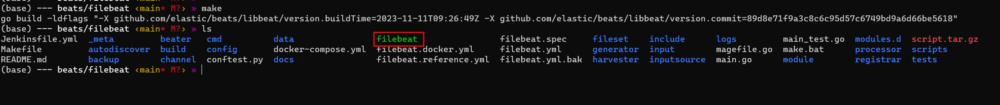

filebeat 提供的 processor 工具可以实现很多数据转换的功能，那么如何实现一个自己的 processor 呢？
准备
首先，需要知道如何编译一个 filebeat。下载 beat 的源码，它包含了 filebeat：
1 git clone https://github.com/elastic/beats.git
需要有 go 语言的环境，如今的 beat 使用的是 go 的 1.20 版本。go 的安装参考其它往上文档。
执行编译：
等待一段时间，如果没有报错并退出，可以看到当前目录下有一个二进制文件 filebeat，表明编译成功。
filebeat
创建一个简单的配置文件 filebeat.yml：
1 2 3 4 5 6 7 8 9 - type: log enabled: true paths: - ./README.md output.console: pretty: true
启动：
1 ./filebeat -c filebeat.yml
启动完成后，可以看到日志被一条条读取出来（实际上非常快），并形成了一个个 json 对象。
1 2 3 4 5 6 7 8 9 10 11 12 13 14 15 16 17 18 19 20 21 22 23 24 25 26 27 28 29 30 31 { "@timestamp" : "2023-11-11T09:47:56.651Z" , "@metadata" : { "beat" : "filebeat" , "type" : "_doc" , "version" : "8.12.0" } , "log" : { "offset" : 1048 , "file" : { "path" : "/home/mike/tmp/filebeat-processors/beats/filebeat/README.md" } } , "message" : "[CONTRIBUTING.md](../CONTRIBUTING.md) file." , "input" : { "type" : "log" } , "host" : { "name" : "DESKTOP-VQKJ06I" } , "agent" : { "ephemeral_id" : "cc829461-e0c9-4ef1-a147-247491189763" , "id" : "3fde326c-7eb2-4878-9272-4a42f12ded5a" , "name" : "DESKTOP-VQKJ06I" , "type" : "filebeat" , "version" : "8.12.0" } , "ecs" : { "version" : "8.0.0" } }
processor 代码格式
processor 的代码主要放在libbeat/processors中。所有的包被libeat/cmd/instance/imports_common.go导入。
1 2 3 4 5 6 7 8 9 10 11 12 13 14 15 16 17 18 19 20 21 22 23 24 25 26 27 28 29 30 31 32 33 34 35 36 37 38 39 40 41 42 43 44 45 46 47 48 49 50 package instanceimport ( _ "github.com/elastic/beats/v7/libbeat/autodiscover/appenders/config" _ "github.com/elastic/beats/v7/libbeat/autodiscover/providers/jolokia" _ "github.com/elastic/beats/v7/libbeat/monitoring/report/elasticsearch" _ "github.com/elastic/beats/v7/libbeat/processors/actions" _ "github.com/elastic/beats/v7/libbeat/processors/add_cloud_metadata" _ "github.com/elastic/beats/v7/libbeat/processors/add_formatted_index" _ "github.com/elastic/beats/v7/libbeat/processors/add_host_metadata" _ "github.com/elastic/beats/v7/libbeat/processors/add_id" _ "github.com/elastic/beats/v7/libbeat/processors/add_locale" _ "github.com/elastic/beats/v7/libbeat/processors/add_observer_metadata" _ "github.com/elastic/beats/v7/libbeat/processors/add_process_metadata" _ "github.com/elastic/beats/v7/libbeat/processors/communityid" _ "github.com/elastic/beats/v7/libbeat/processors/convert" _ "github.com/elastic/beats/v7/libbeat/processors/decode_duration" _ "github.com/elastic/beats/v7/libbeat/processors/decode_xml" _ "github.com/elastic/beats/v7/libbeat/processors/decode_xml_wineventlog" _ "github.com/elastic/beats/v7/libbeat/processors/dissect" _ "github.com/elastic/beats/v7/libbeat/processors/dns" _ "github.com/elastic/beats/v7/libbeat/processors/extract_array" _ "github.com/elastic/beats/v7/libbeat/processors/fingerprint" _ "github.com/elastic/beats/v7/libbeat/processors/move_fields" _ "github.com/elastic/beats/v7/libbeat/processors/ratelimit" _ "github.com/elastic/beats/v7/libbeat/processors/registered_domain" _ "github.com/elastic/beats/v7/libbeat/processors/script" _ "github.com/elastic/beats/v7/libbeat/processors/syslog" _ "github.com/elastic/beats/v7/libbeat/processors/translate_sid" _ "github.com/elastic/beats/v7/libbeat/processors/urldecode" _ "github.com/elastic/beats/v7/libbeat/publisher/includes" )
看到的github.com/elastic/beats/v7/libbeat/processors/开头的包就是被导入的 processor。
其中，github.com/elastic/beats/v7/libbeat/processors/actions是个特殊的包，打开libbeat/processors/actions目录，可以看到许多的 go 文件：
1 2 3 4 5 6 (base) --- processors/actions ‹main* M?› » ls add_fields.go add_network_direction.go append_test.go decode_base64_field_test.go detect_mime_type.go drop_fields_test.go rename.go truncate_fields_test.go add_fields_test.go add_network_direction_test.go common_test.go decode_json_fields.go detect_mime_type_test.go extract_field.go rename_test.go add_labels.go add_tags.go copy_fields.go decode_json_fields_test.go docs extract_field_test.go replace.go add_labels_test.go add_tags_test.go copy_fields_test.go decompress_gzip_field.go drop_event.go include_fields.go replace_test.go add_myname.go append.go decode_base64_field.go decompress_gzip_field_test.go drop_fields.go include_fields_test.go truncate_fields.go
每个 go 文件就是一个 processor 的源码（也有一些是公共组件源码）。我们创建一个简单 processor 的工作就从这个目录开始。
简单的 processor 说明和创建
这个 processor 功能很简单，名称叫做 add_my_name，提供一个参数 my_name 作为键，就可以将其值加入到每个对象中。如下是使用 add_my_name 的配置文件：
1 2 3 4 5 6 7 8 9 10 11 12 13 filebeat.inputs: - type: log enabled: true paths: - ./README.md processors: - add_my_name: my_name: Mike output.console: pretty: true
在libbeat/processors/actions中增加一个add_my_name.go文件，基本内容如下：
1 2 3 4 5 6 7 8 9 10 11 12 13 package actionsimport ( "fmt" "github.com/elastic/beats/v7/libbeat/beat" "github.com/elastic/beats/v7/libbeat/processors" "github.com/elastic/beats/v7/libbeat/processors/checks" jsprocessor "github.com/elastic/beats/v7/libbeat/processors/script/javascript/module/processor" "github.com/elastic/beats/v7/libbeat/publisher" conf "github.com/elastic/elastic-agent-libs/config" "github.com/elastic/elastic-agent-libs/logp" )
我们的 processor 只有一个 my_name 的字段，但是也需要用一个结构体来定义一下：
1 2 3 type addMyNameFieldsConfig struct { MyName string `config:"my_name"` }
注意字段名 MyName 需要大写，不然就是私有属性，后续的处理工具无法获取。而config:"my_name"则是定义了字段名。
还需要定义一个结构体将配置放在里面，它将作为一个对象，实现后续必须的一些方法。
1 2 3 4 type addMyNameFields struct { config addMyNameFieldsConfig logger *logp.Logger }
这个结构体是很灵活的，可以增加更多的属性，只是这里我们仅需要一个 config 表示配置，和一个 logger 用来打印日志。
接下来定义初始化函数：
1 2 3 4 5 func init () processors.RegisterPlugin("add_my_name" , checks.ConfigChecked(NewAddMyNameFields, checks.RequireFields("my_name" ))) }
init()是 go 中的初始化函数，每个文件被导入的时候就会调用这个函数。在init()中，我们将 NewAddMyNameFields 函数注册到 processors 中。在注册的时候，还调用了 checks.ConfigChecked(NewAddMyNameFields,checks.RequireFields("my_name"))对配置进行了检查，判断有没有"my_name"字段。
如果不需要检查字段，可以像这样写：
1 2 3 func init () processors.RegisterPlugin("add_my_name" ,NewAddMyNameFields) }
NewAddMyNameFields 是需要我们来定义的，定义如下：
1 2 3 4 5 6 7 8 9 10 11 12 13 func NewAddMyNameFields (c *conf.C) error ) { config := addMyNameFieldsConfig{} err := c.Unpack(&config) if err != nil { return nil , fmt.Errorf("failed to unpack the add_my_name configuration: %w" , err) } f := &addMyNameFields{ config: config, logger: logp.NewLogger("add_my_name" ), } return f, nil }
该函数接收一个类型为conf.C的参数，返回了两个内容，第一个是beat.Processor的对象，第二个是 error。
注意前两行的代码：
1 2 config := addMyNameFieldsConfig{} err := c.Unpack(&config)
第一行实例化了一个addMyNameFieldsConfig的结构体，而第二行的c.Unpack(&config)将我们配置文件中的内容（也就是 c）解压到了 config 对象中，执行之后，config 中将会多出"my_name: Mike"这个字段。
随后，需要实现addMyNameFields的两个方法 Run 和 String，让它称为一个真正的beat.Processor。
1 2 3 4 5 6 7 8 9 10 11 12 13 14 15 func (f *addMyNameFields) error ) { _, err := event.PutValue("my_name" , f.config.MyName) if err != nil { errMsg := fmt.Errorf("could not put value: %s: %v, %w" , "my_name" , f.config.MyName, err) if publisher.LogWithTrace() { f.logger.Debug(errMsg.Error()) } } return event, nil } func (f *addMyNameFields) string { return "add_my_name=" + fmt.Sprintf("%+v" , f.config.MyName) }
Run()方法是具体的处理过程。它传入了一个beat.Event，并返回了一个beat.Event。我们的功能实现起来很简单，只需要一句_, err := event.PutValue("my_name", f.config.MyName)，其它的代码都是在做一些错误处理。String()方法就是用来表示addMyNameFields对象的。
可以看到，processor 就是利用我们创建的实现Processor接口的对象，调用其Run()方法来处理beat.Event对象。
为了实现更多功能，可以了解一下beat.Event的一些基本方法，包括：
func (e *Event) GetValue(key string) (interface{}, error)
获取 key 对应的 value 值。
func (e *Event) PutValue(key string, v interface{}) (interface{}, error)
设置 key 的值为 v。
func (e *Event) Delete(key string) error
删除一个 key。
func (e *Event) HasKey(key string) (bool, error)
判断事件中是否有某个 key。
func (e Event) Clone() Event
克隆一个事件对象，有时候为了防止数据在处理过程中被污染，可以先 clone 一份处理前的事件对象，如果出现错误，可以回退。
func (e *Event) setTimestamp(v interface{}) (interface{}, error)
可以设置@timestamp属性，v 可以是 time.Time 对象或 common.Time 对象。
效果
完整的代码如下：
1 2 3 4 5 6 7 8 9 10 11 12 13 14 15 16 17 18 19 20 21 22 23 24 25 26 27 28 29 30 31 32 33 34 35 36 37 38 39 40 41 42 43 44 45 46 47 48 49 50 51 52 53 54 55 56 57 58 59 60 61 62 63 64 65 66 67 68 69 70 71 72 73 74 75 76 77 package actionsimport ( "fmt" "github.com/elastic/beats/v7/libbeat/beat" "github.com/elastic/beats/v7/libbeat/processors" "github.com/elastic/beats/v7/libbeat/processors/checks" jsprocessor "github.com/elastic/beats/v7/libbeat/processors/script/javascript/module/processor" "github.com/elastic/beats/v7/libbeat/publisher" conf "github.com/elastic/elastic-agent-libs/config" "github.com/elastic/elastic-agent-libs/logp" ) type addMyNameFields struct { config addMyNameFieldsConfig logger *logp.Logger } type addMyNameFieldsConfig struct { MyName string `config:"my_name"` } func init () processors.RegisterPlugin("add_my_name" , checks.ConfigChecked(NewAddMyNameFields, checks.RequireFields("my_name" ))) jsprocessor.RegisterPlugin("AddMyName" , NewAddMyNameFields) } func NewAddMyNameFields (c *conf.C) error ) { config := addMyNameFieldsConfig{} err := c.Unpack(&config) if err != nil { return nil , fmt.Errorf("failed to unpack the add_my_name configuration: %w" , err) } f := &addMyNameFields{ config: config, logger: logp.NewLogger("add_my_name" ), } return f, nil } func (f *addMyNameFields) error ) { _, err := event.PutValue("my_name" , f.config.MyName) if err != nil { errMsg := fmt.Errorf("could not put value: %s: %v, %w" , "my_name" , f.config.MyName, err) if publisher.LogWithTrace() { f.logger.Debug(errMsg.Error()) } } return event, nil } func (f *addMyNameFields) string { return "add_my_name=" + fmt.Sprintf("%+v" , f.config.MyName) }
编译并测试：
1 2 3 4 cd filebeat/make rm -rf data/./filebeat -c filebeat.yml
在启动之前需要执行一次rm -rf data/，因为 filebeat 是断点续传的，断点就记录在 data/目录中，删掉它才可以重新采集文件。
你将看到类似如下的结果：
1 2 3 4 5 6 7 8 9 10 11 12 13 14 15 16 17 18 19 20 21 22 23 24 25 26 27 28 29 30 31 32 { "@timestamp" : "2023-11-11T10:39:40.235Z" , "@metadata" : { "beat" : "filebeat" , "type" : "_doc" , "version" : "8.12.0" } , "input" : { "type" : "log" } , "ecs" : { "version" : "8.0.0" } , "host" : { "name" : "DESKTOP-VQKJ06I" } , "agent" : { "version" : "8.12.0" , "ephemeral_id" : "07dbf3a7-21e7-4c54-b0f0-c8f859b672da" , "id" : "1b92ed52-69c5-4789-9eb5-2bf1a1b5360d" , "name" : "DESKTOP-VQKJ06I" , "type" : "filebeat" } , "my_name" : "Mike" , "log" : { "file" : { "path" : "/home/zhaoyiming/tmp/filebeat-processors/beats/filebeat/README.md" } , "offset" : 1048 } , "message" : "[CONTRIBUTING.md](../CONTRIBUTING.md) file." }
我们已经在其中加上了"my_name": "Mike",这一行。